한국사능력검정시험-중급(폐지) (2014-05-24 기출문제)
1. 다음 유물을 처음 제작한 사람들의 생활 모습으로 옳은 것은? [1점]
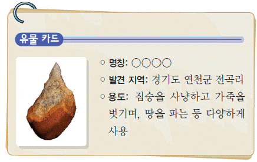
- 동굴이나 막집에서 주로 살았다.
- 가락바퀴를 사용하여 실을 뽑았다.
- 빗살무늬 토기에 식량을 저장하였다.
- 지배자의 무덤으로 고인돌을 만들었다.
- 반달 돌칼을 이용하여 벼를 수확하였다.
(정답률: 94%)

2. 다음 왕이 실시한 정책을 옳은 것은? [2점]
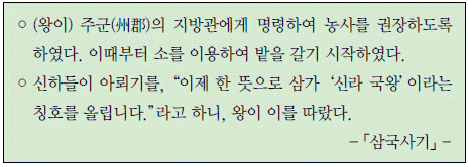
- 이사부를 보내 우산국을 정벌하였다.
- 거칠부에게 국사를 편찬하도록 하였다.
- 왕권 강화를 위하여 불교를 공인하였다.
- 관리 선발을 위하여 독서삼품과를 시행하였다.
- 관리에게 관료전을 지급하고 녹읍을 폐지하였다.
(정답률: 78%)
3. (가), (나) 나라에 대한 설명으로 옳은 것은? [2점]
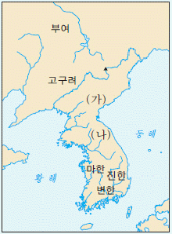
- (가) - 책화라는 풍습이 있었다.
- (나) - 낙랑과 왜에 철을 수출하였다.
- (나) - 천군이 관장하는 소도가 있었다.
- (나) - 무천이라는 제천 행사가 있었다.
- (가), (나) - 신지, 읍차라고 불리는 지배자가 있었다.
(정답률: 74%)
4. (가)에 들어갈 문화유산으로 옳은 것은? [1점]
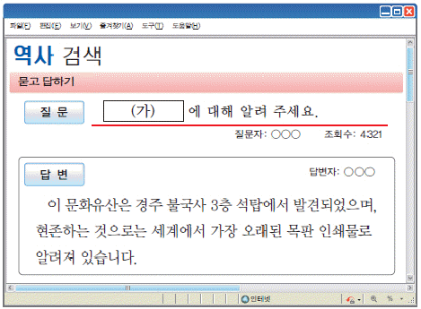
- 초조대장경
- 팔만대장경
- 직지심체요절
- 상정고금예문
- 무구정광대다라니경
(정답률: 77%)
5. 지도와 같은 형세를 이룬 시기의 고구려에 대한 사실로 옳은 것은? [2점]
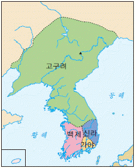
- 졸본에서 국내성으로 도읍을 옮겼다.
- 낙랑군을 축출하여 영토를 확장하였다.
- 을파소의 건의로 진대법을 실시하였다.
- 천리 장성을 축조하여 당의 침략에 대비하였다.
- 남한강 상류 지역에 충주 고구려비를 건립하였다.
(정답률: 79%)
6. 밑줄 그은 ‘이 문서’ 에 대한 설명으로 옳은 것은 <보기>에서 고른 것은? [2점]
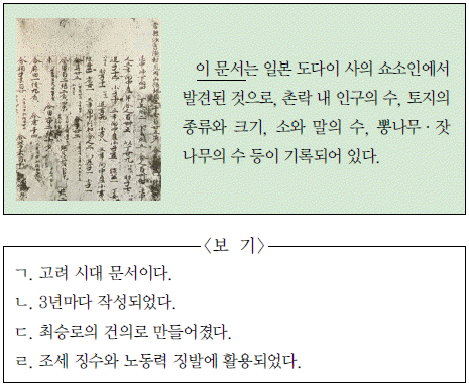
- ㄱ, ㄴ
- ㄱ, ㄷ
- ㄴ, ㄷ
- ㄴ, ㄹ
- ㄷ, ㄹ
(정답률: 76%)
7. 다음 문화유산에 대한 공통 탐구 주제로 가장 적절한 것은? [3점]
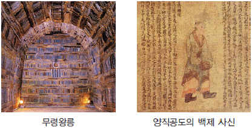
- 나 · 제 동맹의 성립 배경
- 삼국 시대 불교의 수용 과정
- 백제와 중국 남조의 문물 교류
- 일본에 남아 있는 백제 문화유산
- 고구려와 백제 건국 세력의 유사성
(정답률: 78%)
8. 밑줄 그은 ‘이 종파’ 에 대한 설명으로 옳은 것을 <보기>에서 고른 것은? [2점]
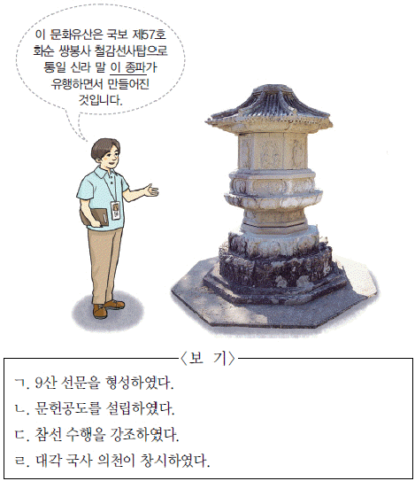
- ㄱ, ㄴ
- ㄱ, ㄷ
- ㄴ, ㄷ
- ㄴ, ㄹ
- ㄷ, ㄹ
(정답률: 37%)
9. 다음 중앙 관제를 갖춘 국가에 대한 설명으로 옳은 것은? [3점]
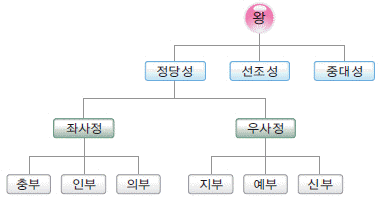
- 9서당 10정의 군사 조직을 갖추었다.
- 나 · 당 연합군의 공격으로 멸망하였다.
- 인안, 대흥 등의 독자적 연호를 사용하였다.
- 국가의 중대사를 화백 회의에서 결정하였다.
- 9주 5소경 체제를 갖추어 지방을 통제하였다.
(정답률: 59%)
10. (가) 인물의 활동으로 옳은 것은? [2점]
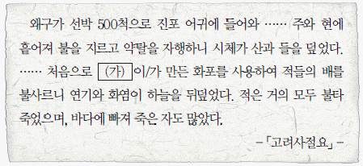
- 거북선을 제작하였다.
- 나선 정벌을 추진하였다.
- 화통도감 설치를 건의하였다.
- 처인성 전투에서 활약하였다.
- 일본에 통신사로 파견되었다.
(정답률: 79%)
11. 밑줄 그은 ‘인물’ 의 업적으로 옳은 것은? [1점]
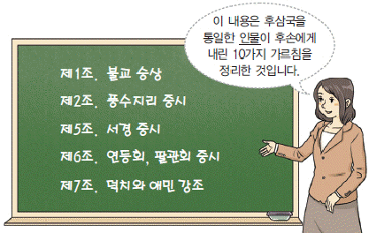
- 흑창을 설치하였다.
- 전시과를 제정하였다.
- 과거제를 도입하였다.
- 노비안검법을 시행하였다.
- 12목에 지방관을 파견하였다.
(정답률: 65%)
12. 다음 안내문에 대한 학생의 댓글로 적절하지 않은 것은? [1점]
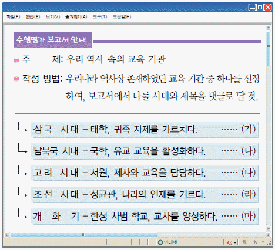
- (가)
- (나)
- (다)
- (라)
- (마)
(정답률: 62%)
13. (가)에 들어갈 내용으로 옳은 것은? [3점]
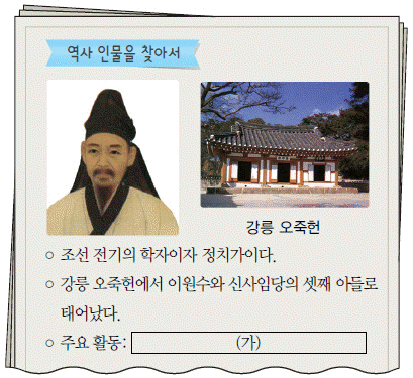
- 거중기를 설계하였다.
- 성학집요를 저술하였다.
- 동국지도를 제작하였다.
- 호락 논쟁을 전개하였다.
- 청의 문물 수용을 주장하였다.
(정답률: 83%)
14. (가)에 들어갈 청치 기구에 대한 설명으로 옳은 것은? [2점]
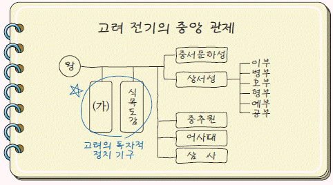
- 물가 조절을 관장하였다.
- 관리에 대한 감찰을 담당하였다.
- 국방 및 군사 문제를 논의하였다.
- 간쟁, 봉박, 서경의 권한을 행사하였다.
- 화폐와 곡식의 출납, 회계를 맡아보았다.
(정답률: 83%)
15. 다음 사진전에 전시될 문화유산으로 옳은 것은? [3점]
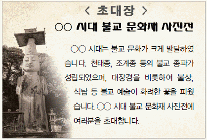
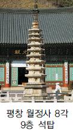
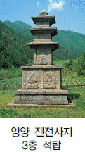
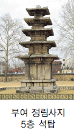
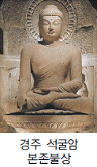
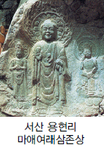
(정답률: 64%)
16. 다음 사건이 일어난 시기를 연표에서 옳게 고른 것은? [2점]
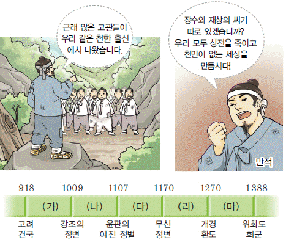
- (가)
- (나)
- (다)
- (라)
- (마)
(정답률: 81%)
17. (가) 인물에 대한 설명으로 옳은 것은? [2점]
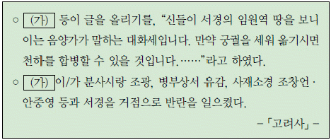
- 강동 6주를 확보하였다.
- 전민변정도감을 설치하였다.
- 귀주에서 거란군을 물리쳤다.
- 칭제 건원과 금국 정벌을 주장하였다.
- 송악 출신 호족으로 나주를 점령하였다.
(정답률: 79%)
18. 다음 정책을 처음 실시한 왕의 업적으로 옳은 것은? [2점]
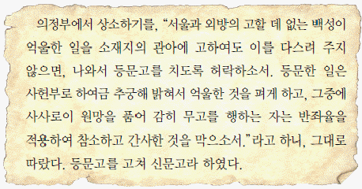
- 측우기를 제작하였다.
- 호패법을 실시하였다.
- 탕평비를 건립하였다.
- 경국대전을 반포하였다.
- 훈민정음을 창제하였다.
(정답률: 55%)
19. 지도의 표시된 지역에 대한 탐구 활동으로 가장 적절한 것은? [2점]
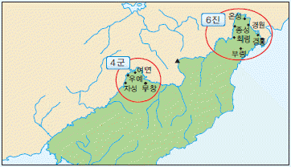
- 삼별초의 항재 원인을 찾아본다.
- 웅진도독부의 위치를 검색해본다.
- 명량 대첩의 승리 요인을 알아본다.
- 사민 정책의 시행 목적을 살펴본다.
- 위화도 회군의 전개 과정을 조사해본다.
(정답률: 56%)
20. (가)에 들어갈 용어에 대한 설명으로 옳은 것은? [2점]
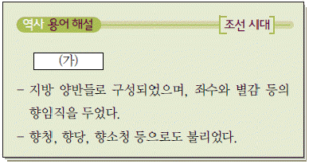
- 수령을 보좌하고 향리를 감찰하였다.
- 흥선 대원군에 의해 대부분 철폐되었다.
- 6방으로 구성되어 지방 행정 실무를 담당하였다.
- 지방 공립 교육 기관으로 군 · 현마다 설치되었다.
- 지방에 대한 행정권, 사법권, 군사권을 행사하였다.
(정답률: 59%)
21. 밑줄 그은 ‘왕’의 정책으로 옳은 것을 <보기>에서 고른 것은? [3점]
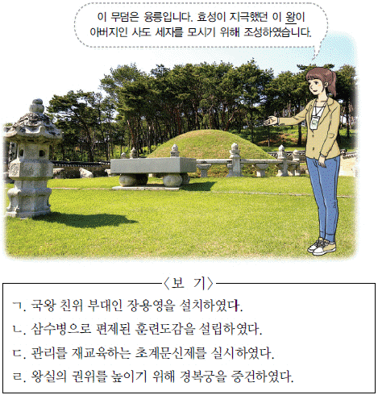
- ㄱ, ㄴ
- ㄱ, ㄷ
- ㄴ, ㄷ
- ㄴ, ㄹ
- ㄷ, ㄹ
(정답률: 76%)
22. 다음 전쟁의 영향으로 옳은 것을 <보기>에서 고른 것은? [2점]
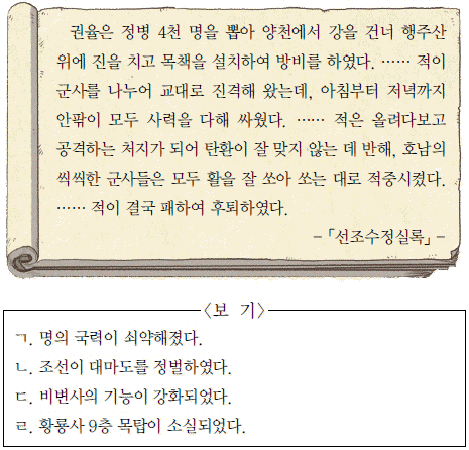
- ㄱ, ㄴ
- ㄱ, ㄷ
- ㄴ, ㄷ
- ㄴ, ㄹ
- ㄷ, ㄹ
(정답률: 58%)
23. 밑줄 그은 ‘정책’의 내용으로 옳은 것은? [2점]
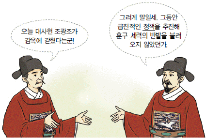
- 사병을 혁파하였다.
- 집현전을 설치하였다.
- 현량과를 실시하였다.
- 과전법을 제정하였다.
- 6조 직계제를 시행하였다.
(정답률: 78%)
24. 교사의 질문에 대한 학생의 대답으로 옳은 것은? [1점]
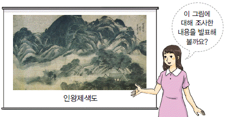
- 중국의 고사를 주제로 하였어요.
- 조선 전기에 그려진 작품이에요.
- 안평 대군의 꿈을 그린 것이에요.
- 풍요와 다산의 염원이 담겨있어요.
- 우리나라의 산천을 사실적으로 표현했어요.
(정답률: 55%)
25. 다음 자료에 해당하는 책으로 옳은 것은? [1점]
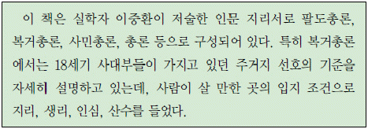
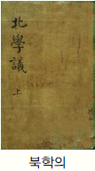
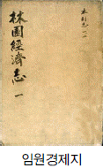
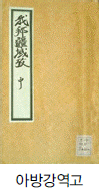
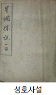
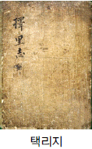
(정답률: 79%)
26. 밑줄 그은 (ㄱ)에 해당하는 정책으로 옳은 것은? [2점]
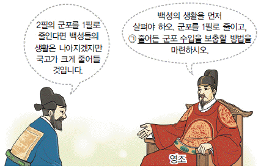
- 결작을 징수하였다.
- 조선통보를 발행하였다.
- 관수 관급제를 실시하였다.
- 토지세를 1결당 4두로 정하였다.
- 공납 기준을 가호에서 토지로 바꾸었다.
(정답률: 56%)
27. 다음에서 설명하는 세시 풍속에서 옳은 것은? [1점]
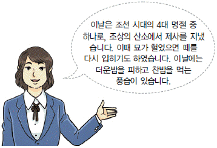
- 설날
- 한식
- 단오
- 추석
- 동지
(정답률: 65%)
28. (가) 시기의 사실로 옳은 것은? [3점]
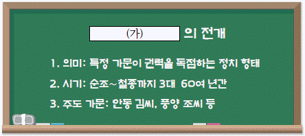
- 기해 예송이 벌어졌다.
- 경신 환국이 발생하였다.
- 홍경래의 난이 일어났다.
- 친명 배금 정책이 추진되었다.
- 사림이 동인과 서인으로 나뉘었다.
(정답률: 57%)
29. 밑줄 그은 (ㄱ)에 대한 설명으로 옳은 것은? [2점]
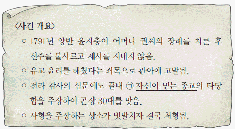
- 인내천 사상을 내세웠다.
- 초기에는 서학으로 불리었다.
- 미륵불이 내려와 세상을 구제한다고 하였다.
- 척양 척왜를 앞세워 외세의 침략을 배척하였다.
- 단군 숭배를 통해 민족 의식을 높이고자 하였다.
(정답률: 66%)
30. (가) 인물이 시행한 정책으로 옳은 것은? [2점]
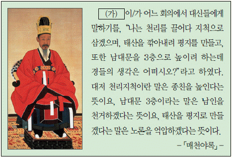
- 속대전을 편찬하였다.
- 과거제를 폐지하였다.
- 호포제를 실시하였다.
- 수원 화성을 축조하였다.
- 조사 시찰단을 파견하였다.
(정답률: 45%)
31. 밑줄 그은 ‘이 사건’으로 옳은 것을? [2점]
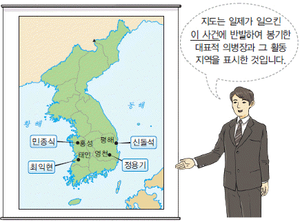
- 을사늑약
- 사법권 강탈
- 토지 조사 사업
- 고종의 강제 퇴위
- 대한 제국 군대의 해산
(정답률: 60%)
32. (가)에서 (나)로 바뀌게 된 계기로 옳은 것은? [2점]
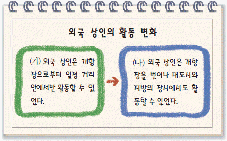
- 독립 협회의 요구
- 청 ㆍ 일 전쟁의 발발
- 영국의 거문도 불법 점령
- 황국 중앙 총상회의 활동
- 조 ㆍ 청 상민 수륙 무역 장정의 체결
(정답률: 83%)
33. 다음 사건의 원인으로 가장 적절할 것은? [2점]
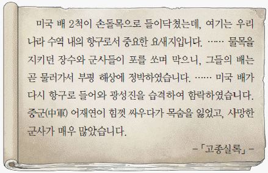
- 병인박해가 일어났다.
- 조선책략이 유포되었다.
- 장인환이 스티븐스를 사살하였다.
- 신식 군대인 별기군이 창설되었다.
- 평양 관민이 제너럴 셔먼호를 불태웠다.
(정답률: 85%)
34. 다음 대화를 나누는 정치 세력에 대한 설명으로 옳은 것을? [2점]
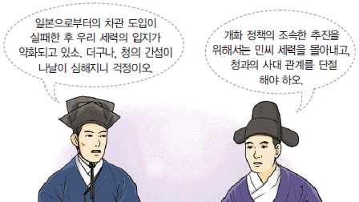
- 갑신정변을 일으켰다.
- 척화 주전론을 주장하였다.
- 영남 만인소를 주도하였다.
- 통리기무아문의 설치를 반대하였다.
- 김윤식, 어윤중이 대표적인 인물이다.
(정답률: 67%)
35. (가)에 대한 설명으로 옳은 것은? [3점]
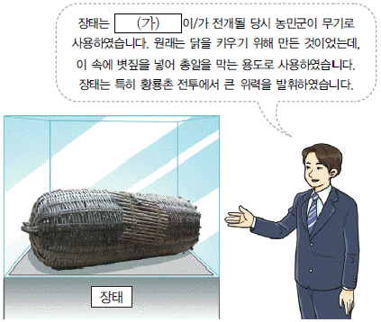
- 유계춘이 주도하였다.
- 만민 공동회를 개최하였다.
- 공화정 수립을 추구하였다.
- 고부 농민 봉기에서 비롯되었다.
- 제물포 조약이 체결되는 결과를 가져왔다.
(정답률: 79%)
36. 다음 주장에 대한 탐구 활동으로 자장 적절한 것은? [1점]
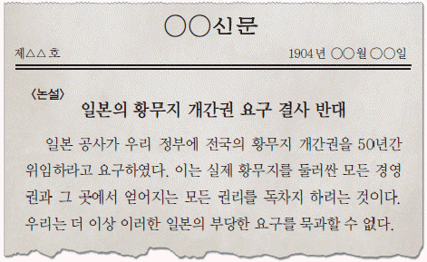
- 보안회의 활동을 찾아본다.
- 기유 각서의 내용을 분석한다.
- 아관 파천의 배경을 조사한다.
- 1⑤인 사건의 전개 과정을 살펴본다.
- 헤이크 특사 파견의 결과를 알아본다.
(정답률: 69%)
37. 다음 법령이 발표돈 시기를 연표에서 옳게 고른 것은? [2점]
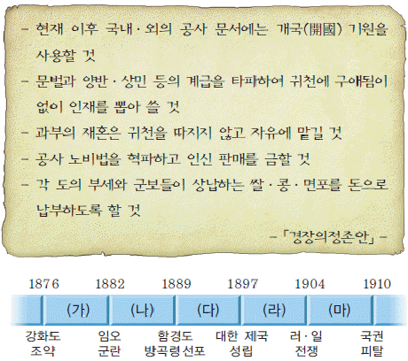
- (가)
- (나)
- (다)
- (라)
- (마)
(정답률: 40%)
38. 다음 글을 쓴 인물의 활동으로 옳은 것은? [2점]
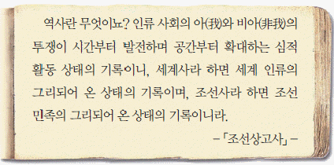
- 독사신론을 발표하였다.
- 진단 학회를 창립하였다.
- 조선어 연구회를 조직하였다.
- 조선사회경제사를 저술하였다.
- 조선 불교 유신론을 제창하였다.
(정답률: 42%)
39. 밑줄 그은 ‘시기’에 볼 수 있는 모습으로 옳은 것은? [3점]
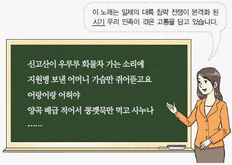
- 회사령에 항의하는 기업가
- 태형을 집행하는 헌병 경찰
- 대한매일신보를 인쇄하는 노동자
- 신사 참배 강요에 저항하는 종교인
- 조선 민립 대학 기성회에 참여하는 교육자
(정답률: 68%)
40. 다음 상황에서 전개된 사회 운동에 대한 자료로 가장 적절한 것은? [1점]
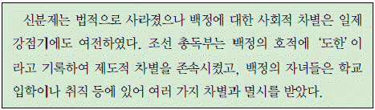
(정답률: 81%)
41. 다름 인물이 속한 단체에 대한 설명으로 옳지 않은 것은? [2점]
- 김원봉을 중심으로 조직되었다.
- 조선 혁명 선언을 활동 지침으로 삼았다.
- 고종의 밀지를 받아 결성된 비밀 단체였다.
- 폭력 투쟁을 통한 일제 타도를 목표로 하였다.
- 동양 척식 주식회사에 폭탄을 던지는 의거를 단행하였다.
(정답률: 55%)
42. (가)에 들어갈 민족 운동에 대한 설명으로 옳지 않은 것은? [2점]
- 조만식을 중심으로 전개되었다.
- 일본에 진 빚을 갚기 위해 시작되었다.
- 평양에서 시작되어 전국으로 확산되었다.
- 우리 민족의 경제적 자립을 목표로 하였다.
- 자작회, 토산 애용 부인회 등이 참여하였다.
(정답률: 52%)
43. (가)에 들어갈 활동 내용으로 옳은 것은? [2점]
- 파리 강화 회의 참가
- 난징에서 민족 혁명당 결성
- 상하이에서 한인 애국단 조직
- 봉오동에서 일본군 부대 격파
- 하얼빈에서 이토 히로부미 사살
(정답률: 75%)
44. 다음 상황을 배경으로 결성된 단체에 대한 설명으로 옳은 것은? [3점]
- 미국에 구미 위원부를 설치하였다.
- 중국 국민당 정부의 지원을 받았다.
- 연통제를 통해 독립 운동 자금을 모았다.
- 순종 인산일에 대규모 만세 시위를 계획하였다.
- 광주 학생 항일 운동 당시 진상 조사단을 파견하였다.
(정답률: 51%)
45. 다음 유적이 있는 지역에 대한 설명으로 옳지 않은 것은? [1점]
- 원이 탐라총관부를 두었다.
- 장보고가 청해진을 설치하였다.
- 추사 김정희가 유배 생활을 하였다.
- 김만덕이 흉년에 빈민에 구휼하였다.
- 김통정의 지휘하에 삼별초가 항쟁하였다.
(정답률: 59%)
46. 다음 역사 다큐멘터리에 들어갈 장면으로 가장 적절한 것은? [2점]
- 사탕수수 농장에서 일하는 노동자
- 2 ㆍ 8 독립 선언문을 작성하는 유학생
- 신한촌에서 권업신문을 발행하는 언론인
- 신흥 무관 학교에서 학생을 가르치는 교사
- 대조선 국민 군단에서 군사 훈련을 받는 청년
(정답률: 63%)
47. (가)에 들어갈 독립군에 대한 설명으로 옳은 것은? [2점]
- 양세봉을 중심으로 조직되었다.
- 청산리에서 일본군을 크게 격파하였다.
- 자유시 참변으로 세력이 크게 약화되었다.
- 중국 공산단의 팔로군과 연합 작전을 전개하였다.
- 연합군의 지원을 받아 국내 진공 작전을 계획하였다.
(정답률: 54%)
48. (가)~(다)를 일어난 순서대로 옳게 나열한 것은? [2점]
- (가)-(나)-(다)
- (가)-(다)-(나)
- (나)-(가)-(다)
- (나)-(다)-(가)
- (다)-(가)-(나)
(정답률: 53%)
49. (가) 정부 시기의 경제 상황으로 옳은 것은? [2점]
- 농지 개혁법이 제정되었다.
- 경부 고속 도로가 개통되었다.
- 제1차 경제 개발 5개년 계획이 시행되었다.
- 경제 협력 개발 기구(OECD)에 가입하였다.
- 원조 물자를 기반으로 삼백 산업이 발전하였다.
(정답률: 77%)
50. 밑줄 그은 ‘정부’ 의 통일 노력으로 옳은 것은? [3점]
- 남북 조절 위원회를 설치하였다.
- 남북 기본 합의서를 채택하였다.
- 7 ㆍ 4 남북 공동 성명을 발표하였다.
- 남북 정상 회담을 최초로 개최하였다.
- 한반도 비핵화 공동 선언에 합의하였다.
(정답률: 56%)